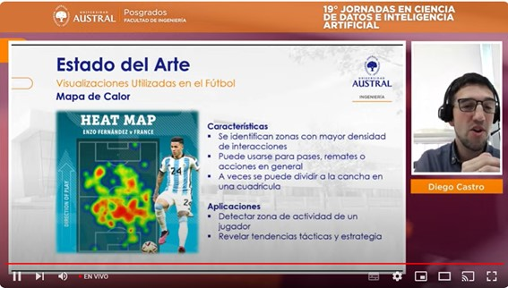
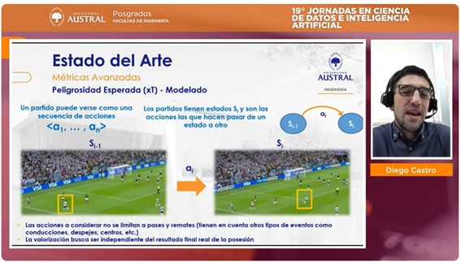
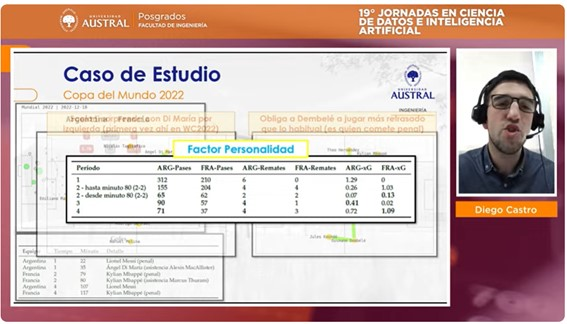

19° Jornadas en Ciencia de Datos e IA (Univ. Austral)
Octubre 2024 - Las Jornadas en Ciencia de Datos & Inteligencia Artificial organizadas por la Facultad de Ingeniería de la Universidad Austral son una gran oportunidad para conocer casos reales de empresas que se encuentran aplicando Data Science en sus procesos.
Durante la segunda jornada presenté mi tesis de Maestría IA en el Fútbol: los datos salen a la cancha.
<< Video próximamente disponible >>
Descargar Agenda Completa



Image Modal
In this example, we use CSS to create a modal (dialog box) that is hidden by default.
We use JavaScript to trigger the modal and to display the current image inside the modal when it is clicked on. Also note that we use the value from the image's "alt" attribute as an image caption text inside the modal.